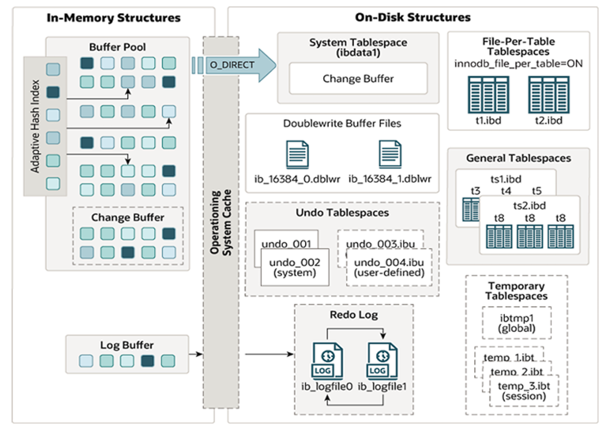
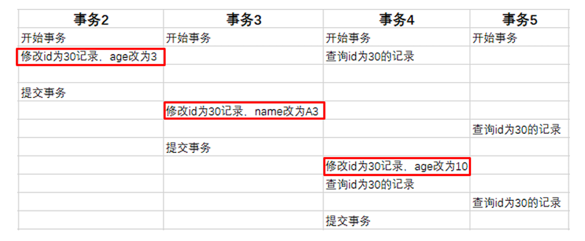

存储引擎
InnoDB引擎¶
逻辑存储结构¶

- 表空间：表空间是InnoDB存储引擎逻辑结构的最高层，一个mysql实例可以对应多个表空间，用于存储记录、索引等数据。
- 段：分为数据段、索引段、回滚段，InnoDB是索引组织表，数据段就是B+树的叶子节点， 索引段即为B+树的非叶子节点。段用来管理多个Extent（区）。
- 区：表空间的单元结构，每个区的大小为1M。
- 页：是InnoDB 存储引擎磁盘管理的最小单元，每个页的大小默认为 16KB。为了保证页的连续性， InnoDB 存储引擎每次从磁盘申请 4-5 个区
- 行：InnoDB 存储引擎数据是按行进行存放的
架构¶
MySQL5.5 版本开始，默认使用InnoDB存储引擎，它擅长事务处理，具有崩溃恢复特性，在日常开发 中使用非常广泛。

内存结构¶
- Buffer Pool，是主内存中的一个区域，里面可以缓存磁盘上经常操作的真实数据，在执行增删改查操作时，先操作缓冲池中的数据（若缓冲池没有数据，则从磁盘加载并缓存），然后再以一定频率刷新到磁盘，从而减少磁盘IO，加快处理速度。
-
Change Buffer，更改缓冲区（针对于非唯一二级索引页），在执行DML语句时，如果这些数据Page 不在Buffer Pool中，不会直接操作磁盘，而是将数据变更存在更改缓冲区 Change Buffer 中，在未来数据被读取时，再将数据合并恢复到Buffer Pool中，再将合并后的数据刷新到磁盘中。
Info
与聚集索引不同，二级索引通常是非唯一的，并且以相对随机的顺序插入二级索引。同样，删除和更新可能会影响索引树中不相邻的二级索引页，如果每一次都操作磁盘，会造成大量的磁盘IO。有了 Change Buffer之后，我们可以在缓冲池中进行合并处理，减少磁盘IO。
-
Adaptive Hash Index 自适应hash索引，用于优化对Buffer Pool数据的查询。MySQL的innoDB引擎中虽然没有直接支持 hash 索引，但是提供了自适应hash索引。但是hash索引不适合做范围查询、模糊匹配等。 InnoDB存储引擎会监控对表上各索引页的查询，如果观察到在特定的条件下hash索引可以提升速度， 则建立hash索引，称之为自适应hash索引。 自适应哈希索引，无需人工干预，是系统根据情况自动完成。
- Log Buffer：日志缓冲区，用来保存要写入到磁盘中的log日志数据（redo log 、undo log）， 默认大小为 16MB，日志缓冲区的日志会定期刷新到磁盘中。如果需要更新、插入或删除许多行的事务，增加日志缓冲区的大小可以节省磁盘 I/O。
Info
Log Buffer 相关系统变量：
innodb_log_buffer_size：缓冲区大小
innodb_flush_log_at_trx_commit：日志刷新到磁盘时机，取值主要包含以下三个：
- 1 ---> 日志在每次事务提交时写入并刷新到磁盘，默认值。
- 0 ---> 每秒将日志写入并刷新到磁盘一次。
- 2 ---> 日志在每次事务提交后写入，并每秒刷新到磁盘一次。
磁盘结构¶
- System Tablespace，系统表空间是更改缓冲区的存储区域。如果表是在系统表空间而不是每个表文件或通用表空间中创建的，它也可能包含表和索引数据。
- File-Per-Table Tablespaces，如果开启了
innodb_file_per_table开关 ，则每个表的文件表空间包含单个InnoDB表的数据和索引 ，并存储在文件系统上的单个数据文件中。 -
General Tablespaces，通用表空间，需要通过 CREATE TABLESPACE 语法创建通用表空间，在创建表时，可以指定该表空间。
Tip
-- 创建表空间 CREATE TABLESPACE ts_name ADD DATAFILE 'file_name' ENGINE = engine_name; -- 创建表时指定表空间 CREATE TABLE xxx ... TABLESPACE ts_name; -
Undo Tablespaces，撤销表空间，MySQL实例在初始化时会自动创建两个默认的undo表空间（初始大小16M），用于存储 undo log日志。
- Temporary Tablespaces， InnoDB 使用会话临时表空间和全局临时表空间。存储用户创建的临时表等数据。
- Doublewrite Buffer Files 双写缓冲区，InnoDB引擎将数据页从Buffer Pool刷新到磁盘前，先将数据页写入双写缓冲区文件中，便于系统异常时恢复数据。
- Redo Log 重做日志，是用来实现事务的持久性。该日志文件由两部分组成：重做日志缓冲（redo log buffer）以及重做日志文件（redo log）,前者是在内存中，后者在磁盘中。当事务提交之后会把所有修改信息都会存到该日志中, 用于在刷新脏页到磁盘时,发生错误时, 进行数据恢复使用。
后台线程¶

- Master Thread，核心后台线程，负责调度其他线程，还负责将缓冲池中的数据异步刷新到磁盘中, 保持数据的一致性， 还包括脏页的刷新、合并插入缓存、undo页的回收 。
- IO Thread， 在InnoDB存储引擎中大量使用了AIO来处理IO请求, 这样可以极大地提高数据库的性能，而IO Thread主要负责这些IO请求的回调。
| 线程类型 | 默认线程数 | 作用 |
|---|---|---|
Read thread |
4 | 处理读操作 |
Write thread |
4 | 处理写操作 |
Log thread |
1 | 将日志缓冲区刷新到磁盘 |
Insert buffer thread |
1 | 将写缓冲区刷新到磁盘 |
- Purge Thread 主要用于回收事务已经提交了的undo log，在事务提交之后，undo log可能不需要了，就用它来回收。
- Page Cleaner Thread 协助 Master Thread 刷新脏页到磁盘的线程，它可以减轻 Master Thread 的工作压力，减少阻塞。
事务原理¶
事务是一组操作的集合，它是一个不可分割的工作单位，事务会把所有的操作作为一个整体一起向系统提交或撤销操作请求，即这些操作要么同时成功，要么同时失败。
ACID特性
- 原子性（Atomicity）：事务是不可分割的最小操作单元，要么全部成功，要么全部失败。
- 一致性（Consistency）：事务完成前后，必须使所有的数据都保持一致状态。
- 隔离性（Isolation）：数据库系统提供的隔离机制，保证事务在不受外部并发操作影响的独立环境下运行。
- 持久性（Durability）：事务一旦提交或回滚，它对数据库中的数据的改变就是永久的。

redo log¶
重做日志，记录的是事务提交时数据页的物理修改，是用来实现事务的持久性。
由两部分组成：重做日志缓冲（redo log buffer）以及重做日志文件（redo log file）,前者是在内存中，后者在磁盘中。当事务提交之后会把所有修改信息都存到该日志文件中, 用于在刷新脏页到磁盘,发生错误时, 进行数据恢复使用。

Note
缓冲区的脏页（被修改了的数据）是通过后台线程刷新到磁盘的，此过程可能出现问题，引入redo log后就可以进行重试
undo log¶
回滚日志，用于记录数据被修改前的信息，作用包含两个 : 提供回滚(保证事务的原子性) 和 MVCC(多版本并发控制) 。
Note
undo log和redo log记录物理日志不一样，它是逻辑日志。可以认为当delete一条记录时，undo log中会记录一条对应的insert记录，反之亦然，当update一条记录时，它记录一条对应相反的 update记录。当执行rollback时，就可以从undo log中的逻辑记录读取到相应的内容并进行回滚。
- Undo log销毁：undo log在事务执行时产生，事务提交时，并不会立即删除undo log，因为这些日志可能还用于MVCC。
- Undo log存储：undo log采用段的方式进行管理和记录，存放在前面介绍的 rollback segment 回滚段中，内部包含1024个undo log segment。
MVCC¶
基本概念¶
- 当前读，读取的是记录的最新版本，读取时还要保证其他并发事务不能修改当前记录，会对读取的记录进行加锁。对于我们日常的操作，如：
select ... lock in share mode(共享锁)，select ... for update、update、insert、delete(排他锁)都是一种当前读。 -
快照读，简单的select（不加锁）就是快照读，快照读，读取的是记录数据的可见版本，有可能是历史数据， 不加锁，是非阻塞读。
- Read Committed：每次select，都生成一个快照读。
- Repeatable Read：开启事务后第一个select语句才是快照读的地方。
- Serializable：快照读会退化为当前读。
-
MVCC，全称 Multi-Version Concurrency Control，多版本并发控制。指维护一个数据的多个版本， 使得读写操作没有冲突，快照读为MySQL实现MVCC提供了一个非阻塞读功能。MVCC的具体实现，还需要依赖于数据库记录中的三个隐式字段、undo log日志、readView。
隐藏字段¶
手动创建一张表时，InnoDB还会自动的给我们添加隐藏字段
| 隐藏字段 | 作用 |
|---|---|
TB_TRX_ID |
最近修改事务ID |
DB_ROLL_PTR |
回滚指针，配合undo log指向这条记录的上一个版本 |
DB_ROW_ID |
隐藏主键，如果表结构没有指定主键将生成该隐藏字段 |
undo log¶
回滚日志，在insert、update、delete的时候产生的便于数据回滚的日志。
当insert的时候，产生的undo log日志只在回滚时需要，在事务提交后，可被立即删除。
而update、delete的时候，产生的undo log日志不仅在回滚时需要，在快照读时也需要，不会立即被删除。
版本链
示例：


Note
不同事务或相同事务对同一条记录进行修改，会导致该记录的undolog生成一条 记录版本链表，链表的头部是最新的旧记录，链表尾部是最早的旧记录。
ReadView¶
ReadView（读视图）是 快照读 SQL执行时MVCC提取数据的依据，记录并维护系统当前活跃的事务 （未提交的）id。
ReadView中包含了四个核心字段：
| 字段 | 含义 |
|---|---|
m_ids |
当前活跃的事务ID集合 |
min_trx_id |
最小活跃事务ID |
max_trx_id |
预分配事务ID，当前最大事务ID+1 |
creator_trx_id |
ReadView创建者的事务ID |
版本链访问规则
- 自修改检查
若被访问版本的
trx_id == creator_trx_id，说明是当前事务自己修改的记录，直接访问该版本 - 已提交事务检查
若
trx_id < min_trx_id，说明该版本在ReadView创建前已提交，可以访问 - 未来事务检查
若
trx_id >= max_trx_id，说明该版本由未来事务创建，不可访问 - 活跃事务检查
若
min_trx_id ≤ trx_id < max_trx_id： - 若
trx_id ∈ m_ids：创建该版本的事务仍活跃，不可访问 - 若
trx_id ∉ m_ids：创建该版本的事务已提交，可以访问
不同隔离级别下的ReadView
| 隔离级别 | ReadView生成时机 | 解决的核心问题 |
|---|---|---|
| READ COMMITTED | 每次SELECT前生成新ReadView | 避免脏读 |
| REPEATABLE READ | 事务首次SELECT时生成ReadView | 避免不可重复读 |
Read Commited 级别下的读取示例

Note
事务5根据上述版本链访问规则，第一次读访问到的是位于 0x00002 的快照，第二此读取是 0x00003 的快照
Repeatable Read 级别下，上述示例的第二次读取会复用第一次生成的ReadView，所以实现了可重复读